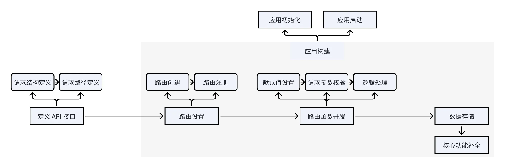
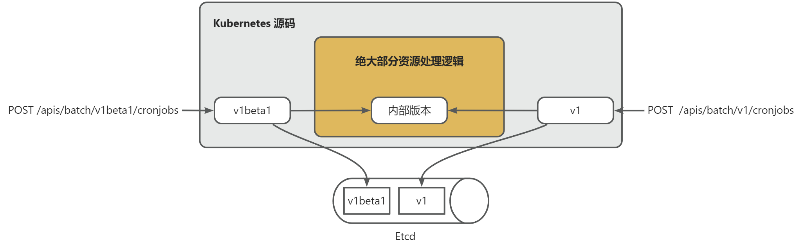

18 | Kubernetes 是如何设计 REST 资源的？
kube-apiserver 是 Kubernetres 最核心的组件，也是其他 Kubernetes 组件运行的依赖。
如何学习 kube-apiserver 源码？
首先，kube-apiserver 本质上是一个标准的 RESTful API 服务器，所以，我会按照 RESTful API 服务器的开发流程去给你讲解 kube-apiserver 具体是如何去实现一个 REST 服务器的。另外，kube-apiserver 中有很多核心的功能和概念，这些功能和概念，我会根据自己的理解，来选择性讲解。
kube-apiserver 本质上是一个提供了 REST 接口的 Web 服务，在开发 Web 服务时，通常我们的开发步骤如下：

首先，我们会根据项目功能，来定义 API 接口。将功能抽象成指定的 REST 资源，并给每一个资源指定请求路径和请求参数：
- **请求路径：**请求路径是一个标准的 HTTP 请求路径。例如：创建 Pod 请求路径为 POST /api/v1/namespaces/{namespace}/pods；
- **请求参数：**根据 HTTP 请求方法的不同，参数的位置也不同。例如：对于 POST、PUT 类请求，请求参数在请求 Body 中指定。GET、DELETE 类请求 ，请求参数在请求 Query 中指定。
提示：更多 Kubernetes API 接口定义请参考 Kubernetes API。
接着，我们需要进行路由设置。路由设置其实就是指定一个 HTTP 请求，由哪个函数来处理，通常包括：路由创建和路由注册。
接着，就需要开发路由函数。路由函数用来具体执行一个 HTTP 请求的逻辑处理。在路由函数中，我们通常会根据需要进行以下处理：
- **默认值设置：**如果有些 HTTP 请求参数没有被指定，为了确保请求能够按预期执行，我们通常会评估这些参数，并设置适合的默认值；
- **请求参数校验：**校验请求参数是否合法；
- **逻辑处理：**编写代码，根据请求参数，完成既定的业务逻辑处理。
接着，如果有些数据需要持久化保存，还需要将数据保存在后端存储中。
上面是一个 Web 服务基础功能的开发流程，在开发完基础功能之后，还会根据需要补充更多的功能、特性。
在实际开发中，我们通常会先定义 API 接口，再开发应用，应用中包括了：路由设置、路由函数、数据存储、核心功能。先定义 API 接口是为了能够将接口约定提前提供给前端，实现前后端并行开发。
Kubernetes 是如何设计 REST API 接口的？
kube-apiserver 是一个 Web 服务，里面内置了很多 REST 资源。在 Kubernetes v1.32.3 版本中，内置了 75 种资源。你可以通过 kubectl api-resources，来列出 kube-apiserver 支持的资源：
$ kubectl api-resources |egrep 'k8s.io|batch| v1| apps| autoscaling| batch'|wc -l
75
提示：要通过 egrep将 Kubernetes 集群中安装的第三方资源过滤掉。
那么，Kubernetes 具体是如何设计这些资源的呢？在回答这个问题之前，我们先来看下，一般的 Web 服务是如何设计 REST 资源的：
-
**指定 REST 资源类型：**根据项目功能，将这些功能抽象成一系列的 REST 资源，例如：user、secret 等；
-
**指定 HTTP 方法：**根据需要对资源进行的操作，指定 HTTP 方法，例如：GET、POST、PUT、DELETE等。不同的 HTTP 方法，完成不同的操作；
-
设计 API 版本的标识方法：通常将版本标识放在如下 3 个位置（第 1 个方法最常用）：
- URL 中，比如 /v1/users；
- HTTP Header 中，比如 Accept: vnd.example-com.foo+json; version=1.0；
- Form 参数中，比如 /users?version=v1；
-
**指定请求参数和返回参数：**给每一个 HTTP 请求指定参数，参数位置要匹配 HTTP 请求方法。
上面是我们在设计 REST API 接口时，需要考虑的点。Kubernetes 作为一个超大型的分布式系统，其 kube-apiserver 组件中集成了 75 种 REST 资源及操作。其在设计时，除了上述我介绍的设计点之外，还做了更进一步的设计。
接下来，我来详细介绍下这些增强型设计。
标准的 RESTful API 定义
REST 是一种 API 接口接口开发规范，有一系列的标准，从 HTTP 方法、请求路径、资源定义等方面给出了一些约束性规范，所有满足 REST 规范的 API 接口，我们称之为 RESTful API。详细的 REST 规范可参考：REST 接口规范。
在企业应用开发中，REST 规范通常由开发者自行遵循，大多数情况下开发者能够较好的遵守 REST 规范去设计 API 接口。但是，因为是软性约束，所以还是有些开发者因为对 REST 规范的不了解、开发能力较低等因素，导致设计出来的 API 接口并不满足 REST 规范。所以在一个 REST Web 服务器中，可能会出现有些接口不满足 REST 规范的情况。
但是，在 Kubernetes 中不存在这种情况，因为 Kubernetes 会从代码层面来确保开发者的资源定义都是符合规范的，并且请求方法、请求路径等，都是基于规范化的资源来自动生成。不需要开发者手动指定。这种刚性的资源规范设计，以及基于规范的自动化 REST 接口生成，会确保 Kubernetes 中，所有 API 都是符合 REST 规范的。
Kubernetes 支持更多的资源操作类型
在常见的 Web 服务中， 通常情况下只会用到 GET、PUT、POST、DELETE 四种 HTTP 请求方法，这些请求方法映射为 Go 函数名为：Get、List、Update、Create、Delete。在 Kubernetes 中，几乎所有的 REST 资源，除了支持以上 5 种操作方法之外，还支持以下 3 种操作类型：
- DeleteCollection：用于删除多个资源对象的操作方法。它允许用户一次性删除整个资源集合，而不需要逐个删除每个资源对象。这对于清理整个资源集合或者进行批量删除操作非常有用。例如，可以使用 deletecollection 来删除某个命名空间下的所有 Pod；
- Patch：用于对资源对象进行部分更新的操作方法。通过 patch 方法，可以只更新资源对象的部分字段或属性，而不需要提供完整的资源对象定义。这对于需要局部修改资源对象的场景非常有用，可以减少数据传输量和减小对资源对象的影响范围；
- Watch：用于监视资源对象变化的操作方法。通过 watch 方法，客户端可以与 API 服务器建立长连接，并实时地接收资源对象的变化通知，包括创建、更新、删除等操作。这对于需要实时监控资源对象状态变化的场景非常有用，比如实时监控 Pod 的状态变化。
Kubernetes 资源组支持更多的功能
支持资源组（Group），在 Kubernetes APIServer 中也可称其为 APIGroup。资源组是对 REST 资源按其功能类别进行的逻辑划分。具有相同功能类别的 Kubernetes REST 资源会被划分到同一个资源组中，例如：Deployment、StatefulSet 资源因为都是用来创建一个工作负载，所以都归属以同一个 apps 资源组。
在很多业务开发中，并不会抽象一个资源组的概念。因为普通的业务开发中，没有针对资源组的统一操作。但组件组，在业务开发中，也是一个值得借鉴的设计方式。
在开发 REST API 服务时，我们通常也会根据需要支持资源组，并且 Web 框架通常也都支持设置资源组，例如，下面是一个使用 Gin 框架设置资源组的代码示例：
package main
import "github.com/gin-gonic/gin"
func main() {
// 创建一个默认的 Gin 引擎
router := gin.Default()
// 设置资源组 "/api"
apiGroup := router.Group("/api")
{
// 在 "/api" 资源组中设置路由
apiGroup.GET("/users/:userID", func(c *gin.Context) {
c.JSON(200, gin.H{
"message": "Get users",
})
})
apiGroup.POST("/users", func(c *gin.Context) {
c.JSON(200, gin.H{
"message": "Create user",
})
})
}
// 设置根路由
router.GET("/", func(c *gin.Context) {
c.JSON(200, gin.H{
"message": "Hello, welcome to the root path",
})
})
// 启动 Gin 服务器
router.Run(":8080")
}
在上面的示例中，首先创建了一个默认的 Gin 引擎，然后使用 router.Group("/api") 来创建了一个名为 /api 的资源组。在这个资源组中，设置了两个路由（GET，/users/:userID）、（POST、/users）。这意味着这两个路由都会以 /api 作为前缀，即访问路径为 /api/users/:userID 和 /api/users。
通过设置资源组，可以将具有相同前缀的路由进行分组，使代码结构更加清晰，同时也可以对这些路由进行统一的中间件处理等。
执行以下命令运行上述代码：
$ go run main.go
打开一个新的 Linux 终端，执行以下 curl 命令来请求 RESTful API 接口：
$ curl http://127.0.0.1:8080/api/users # api 是资源组名
{"message":"Get users"}
如上述示例所示，在我们一般的 REST 开发中，我们并不会针对资源组进行过多的管控，主要使用资源组来对请求路径进行分组。
但是，在 Kubernetes 中，资源组是一个非常重要的概念，承担了更多的功能，后文会详细介绍。
使用资源组、资源版本、资源类型构建 HTTP 请求路径
在一般的 REST 服务开发中，HTTP 请求路径通常是直接指定的。但是在 Kubernetes 中，HTTP 请求路径很多时候，是由资源组、资源版本、资源类型共同构建的。kube-apiserver 会根据资源组、资源版本、资源类型自动构建出资源的请求路径。
例如：创建 Pod 的 HTTP 请求方法和请求路径为 POST /api/v1/namespaces/{namespace}/pods，其中 api 是资源组，v1 是资源版本，pods 是资源类型。
提示：namespaces是命名空间（其实就是一个租户））。
标准化的资源定义
在一般的 REST 服务开发中，POST、PUT 请求的请求 Body 基本都是根据需要自行定义的，没有固定的格式。但是在 Kubernetes 中，请求 Body 也是有固定的格式的。这里，我们来看下 Kubernetes 中，Namespace 资源的定义：
type Namespace struct {
metav1.TypeMeta `json:",inline"`
// Standard object's metadata.
// More info: https://git.k8s.io/community/contributors/devel/sig-architecture/api-conventions.md#metadata
// +optional
metav1.ObjectMeta `json:"metadata,omitempty" protobuf:"bytes,1,opt,name=metadata"`
// Spec defines the behavior of the Namespace.
// More info: https://git.k8s.io/community/contributors/devel/sig-architecture/api-conventions.md#spec-and-status
// +optional
Spec NamespaceSpec `json:"spec,omitempty" protobuf:"bytes,2,opt,name=spec"`
// Status describes the current status of a Namespace.
// More info: https://git.k8s.io/community/contributors/devel/sig-architecture/api-conventions.md#spec-and-status
// +optional
Status NamespaceStatus `json:"status,omitempty" protobuf:"bytes,3,opt,name=status"`
}
// NamespaceSpec describes the attributes on a Namespace.
type NamespaceSpec struct {
// Finalizers is an opaque list of values that must be empty to permanently remove object from storage.
// More info: https://kubernetes.io/docs/tasks/administer-cluster/namespaces/
// +optional
// +listType=atomic
Finalizers []FinalizerName `json:"finalizers,omitempty" protobuf:"bytes,1,rep,name=finalizers,casttype=FinalizerName"`
}
// NamespaceStatus is information about the current status of a Namespace.
type NamespaceStatus struct {
// Phase is the current lifecycle phase of the namespace.
// More info: https://kubernetes.io/docs/tasks/administer-cluster/namespaces/
// +optional
Phase NamespacePhase `json:"phase,omitempty" protobuf:"bytes,1,opt,name=phase,casttype=NamespacePhase"`
// Represents the latest available observations of a namespace's current state.
// +optional
// +patchMergeKey=type
// +patchStrategy=merge
// +listType=map
// +listMapKey=type
Conditions []NamespaceCondition `json:"conditions,omitempty" patchStrategy:"merge" patchMergeKey:"type" protobuf:"bytes,2,rep,name=conditions"`
}
在 Namespace 结构体定义中包含以下 4 个字段：
-
TypeMeta：
- 定义了资源使用的 API 版本，例如：v1、apps/v1 等；
- 定义了资源类型，如 Pod、Service、Deployment 等。
-
ObjectMeta：存储资源的元数据，包括名称、命名空间、标签和注释；
-
Spec： 定义资源的期望状态。每种类型的资源在 spec 中有特定的字段；
-
Status：描述资源的当前状态，一般由 Kubernetes 系统自动管理，用户不需要手动设置。
通常情况下 Kubernetes 资源都会有上述 4 个字段，其中 TypeMeta、ObjectMeta、Spec字段都会有，Status字段根据情况选择具有。例如 ConfigMap、Secret 等资源就没有 Status字段。
Kubernetes 资源定义的规范化、标准化，使得 Kubernetes 可以基于这些规范化的定义，做很多通用的处理。例如：根据 TypeMeta字段构建出资源的请求路径；根据 ObjectMeta字段中的OwnerReferences来对所有资源执行垃圾回收逻辑。根据 ResourceVersion字段对所有资源的更新，实行乐观锁机制。根据 Labels字段，对所有资源实行一致的基于标签过滤逻辑等。
支持资源版本转换
一个企业应用，随着功能的迭代，其 API 接口不可避免的要面临升级的可能。在企业应用开发中，我们通常有以下 2 种方式来支持 API 接口版本的升级：
- **同一个 Web 服务进程中，不同的路由：**例如：POST /v1/users、POST /v2/users，上述 2 个请求路径分别对应 2 个不同的路由函数；
- 不同 Web 服务进程，相同路由：例如：我们可以请求 V1 版本的服务和 V2 版本的服务，2 个服务具有相同的请求路径：POST /users；
在企业级应用开发中，方案 1 用的是最多的。
Kubernetes 也支持不同的版本，例如：/apis/batch/v1beta1/cronjobs、/apis/batch/v1/cronjobs。但是 Kubernetes 相比于传统的 Web 服务，在版本管理上又更近了一层，支持版本转换：

例如，请求 POST /apis/batch/v1beta1/cronjobsRESTful API 时，资源的版本是 v1beta1，请求 POST /apis/batch/v1/cronjobs RESTful API 时，资源的版本是 v1。但是在 Kubernetes 内部，v1beta1 版本和 v1 版本的资源，都会被转换为内部版本（internal version）。Kubernetes 源码中的绝大部分源码处理资源时，其实处理的是内部版本。通过将不同版本都转换为内部版本再处理，可以大大简化 Kubernetes 内部源码处理逻辑，不用考虑多版本兼容的问题。否则 Kubernetes 源码可能充斥着大量的 if v1beta1 ... else if v1 ... else 这种语句。极大的提高了多版本维护的复杂度和成本。
kube-apiserver 在处理完资源之后，保存在 Etcd 中的是版本化的资源数据。Kubernetes 的这种版本转换机制，还会带来另外一种非常重要的能力。就是支持将旧版本的 API 资源数据，转换为新版本的 API 资源数据，转换逻辑为：
关于 Kubernetes 资源版本的转换，课程后面还会详细介绍。
资源处理标准化
在企业应用中，我们通常要对请求进行一些通用的逻辑处理，下面这些逻辑处理是最常见，或者通常都会涉及到的：
- **资源默认值设置：**用户的请求中会携带大量参数，为了提高用户传参的效率、灵活性和安全性，有些参数会有默认值，也就是用户默认可以不设置参数值。这种情况下，后台服务会检查参数值是否被设置，如果没有被设置，后台程序会在逻辑处理前设置上默认值，例如：
if req.Type == "" {
req.Type = "User"
}
在普通的企业应用中，设置默认值的方式可能会因为不同团队、不同项目、不同开发者，各不相同。
- **资源校验：**对资源参数的合法性进行校验，例如：
if req.Type == "" {
return fmt.Errorf("Type cannot be empty")
}
同样，参数校验的方式，可能会因为不同团队、不同项目、不同开发者而各不相同。
同一个项目中，请求参数默认值设置方式、请求参数校验方式的不一致，会提高 API 接口的维护成本。
在 Kubernetes 中，请求参数的默认值设置和参数校验方式，都是统一、规范的，这极大的提高了接口的开发效率，降低了接口的维护成本。这个后面课程会详细介绍。
大量使用代码生成技术
通过上面的介绍，你可以知道在 Kubernetes 中，资源定义、资源参数默认值设置、资源参数校验等，都是规范的、一致的。这种规范性和一致性，也使得很多操作都可以通过代码生成技术一键生成，代码生成工具只需要按照要求，来处理规范化、一致化的 API 资源即可，并生成需要的代码。
例如，我们可以基于规范的资源定义和资源处理逻辑，通过 code-generator 来自定生成版本化的 Go SDK（client-go）、版本转换函数（统一存放在 zz_generated.conversion.go 文件中 ）、默认值设置函数（统一存放在 zz_generated.defaults.go 文件中 ）等。